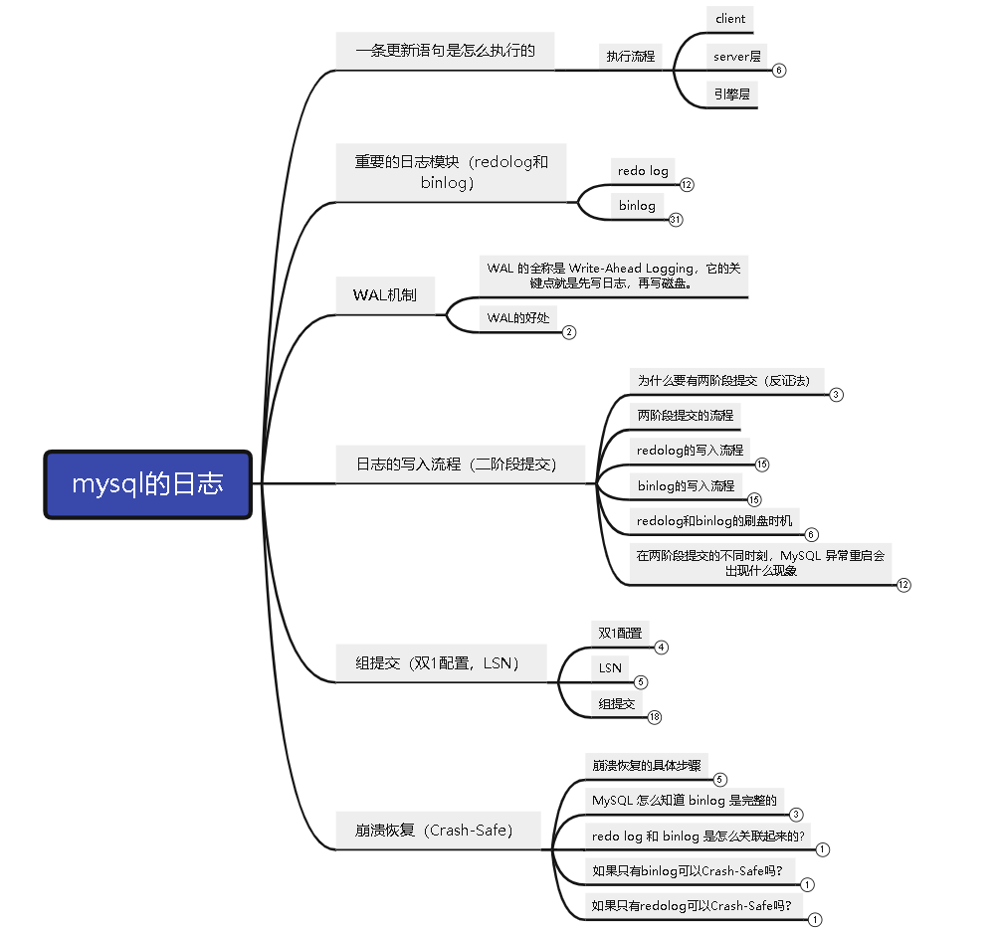

mysql的日志从入门到入土
本文有xmind，配合xmind查看更加友好哦
点击下载：mysql日志从入门到入土.xmind
一条更新语句的执行流程是什么（引入redolog和binlog）
update T set c=c+1 where ID=2;
mysql的更新流程和SQL语句的基本执行链路是一样的：连接器->分析器->优化器->执行器->存储引擎
通过连接器，先连接数据库。
清空查询缓存：在一个表上有更新的时候，跟这个表有关的查询缓存会失效。这也就是我们一般不建议使用查询缓存的原因（在mysql8.0中，已经把查询缓存整个模块都删掉了）。
分析器会通过词法和语法解析知道这是一条更新语句。
优化器决定要使用哪个索引。
执行器负责具体执行，找到这一行，然后更新。
重要的日志模块（redolog和binlog）
与查询流程不一样的是，更新流程还涉及两个重要的日志模块，它们正是我们今天要讨论的主角：redo log（重做日志）和 binlog（归档日志）
什么是redolog
作者举了《孔乙己》中一个赊账的例子，孔乙己来到酒店喝酒，老板会先把孔乙己的酒钱记录在一个粉板上，然后等不忙的时候，在累加到账本上。
这里的粉板就是redolog，账本就是磁盘；
考虑这个场景，当很多很多的人来喝酒的时候，老板一般有两种方式记账（当数据库更新一条记录的时候，一般有两种方式）：
- 直接掏出账本，在账本上加加减减。（直接操作磁盘的数据，进行更新）
- 另一种做法是先在粉板上记下这次的账，等打烊以后再把账本翻出来核算（先记录到redolog，等mysql空闲的时候，刷到磁盘）。
在酒店生意红火的时候，老板一定选择后者，因为前者操作实在是太麻烦了。
- 首先，你得找到这个人的赊账总额那条记录。你想想，密密麻麻几十页，掌柜要找到那个名字，可能还得带上老花镜慢慢找。（磁盘的随机IO读）
- 找到之后再拿出算盘计算，最后再将结果写回到账本上（磁盘的随机写）
粉板（redolog）就完美的解决了这两个问题：
- 首先说找记录：mysql的所有记录都是从数据页中查的，如果要更新的数据所在的数据页在内存中，可以直接找到，如果不在内存中，会先从磁盘把这个数据库加载到内存中。（这个步骤没法省，redolog优化的地方并不在于这里，这里会有changebuffer优化（后面说））
- 找到记录之后，然后说更新记录：更新的结果是写到redolog中，而不是写到磁盘中，就避免了磁盘的随机IO，虽然redolog也是写到磁盘中的，但是由于组提交的存在，一次磁盘的写入是大量的顺序IO；（redolog是顺序写，并且可以组提交，还有别的一些优化，收益最大是是这两个因素；）
redo log有什么用
有了 redo log，InnoDB 就可以保证即使数据库发生异常重启，之前提交的记录都不会丢失，这个能力称为 crash-safe。
为什么要引入redolog
因为最开始 MySQL 里并没有 InnoDB 引擎。MySQL 自带的引擎是 MyISAM，但是 MyISAM 没有 crash-safe 的能力，binlog 日志只能用于归档。而 InnoDB 是另一个公司以插件形式引入 MySQL 的，既然只依靠 binlog 是没有 crash-safe 能力的，所以 InnoDB 使用另外一套日志系统——也就是 redo log 来实现 crash-safe 能力。
mysql要保证数据的持久性，保证持久性就需要将数据写到磁盘，但是写到磁盘的话，涉及到
- 刷页，因为mysql所有的操作是针对数据页操作的，而一个简单的更新，可能就要刷整整一个数据页
- 随机IO，一个事务所更新的涉及到的数据页可能不止一个，而且数据页可能不相连，就涉及到随机IO
这俩问题，咋办呢？就引入了redolog，一个更新不刷页（先记录到redolog日志中），这样就避免了上面两个问题
- redolog将随机IO改成了顺序IO，而且避免了每次更新都刷盘（刷盘也是要刷的，但是是组提交）
redolog的结构
redolog是循环写的文件，InnoDB 的 redo log 是固定大小的，比如可以配置为一组 4 个文件，每个文件的大小是 1GB，那么总共就可以记录 4GB 的操作。从头开始写，写到末尾就又回到开头循环写，如下面这个图所示。
write pos 是当前记录的位置，一边写一边后移，写到第 3 号文件末尾后就回到 0 号文件开头。checkpoint 是当前要擦除的位置，也是往后推移并且循环的，擦除记录前要把记录更新到数据文件。
write pos 和 checkpoint 之间的是还空着的部分，可以用来记录新的操作。如果 write pos 追上 checkpoint，表示满了，这时候不能再执行新的更新，得停下来先擦掉一些记录，把 checkpoint 推进一下。
redolog一般设置多大
redo log 太小的话，会导致很快就被写满，然后不得不强行刷 redo log，这样 WAL 机制的能力就发挥不出来了。所以，如果是现在常见的几个 TB 的磁盘的话，就不要太小气了，直接将 redo log 设置为 4 个文件、每个文件 1GB 吧。
- innodb_log_file_size：该参数指定了每个redo日志文件的大小，在MySQL 5.7.21这个版本中的默认值为48MB，
- innodb_log_files_in_group：该参数指定redo日志文件的个数，默认值为2，最大值为100。
binlog是什么
我们知道mysql是由两部分组成，server层和引擎层，上面介绍的redolog就是innodb引擎独有的日志，而MySQL的server层也有自己的日志，叫做binlog；
为什么要有两个日志呢
因为mysql在5.5版本之前，默认的存储引擎是MyISAM，但是MyISAM并没有Crash-Safe的能力，而server层自带的binlog又只有归档的能力，也不具备Crash-Safe的能力，所以才会有后来的innodb以插件的形式引入mysql中，作为mysql的引擎，并使用了redo log，实现了Crash-Safe的能力
除了以上的原因，binlog和redolog还有其他的区别，解释了为什么存在两个日志
- 这两个日志的使用方不一样：redolog是innodb引擎所特有的，只有innodb才能用；而binlog是mysql的server层有的，所有的引擎都可以使用；
- 这两个日志记录的内容不一样：redolog是物理日志，记录的是在某个数据页上做了什么修改；而binlog是逻辑日志，简单的说就是sql语句。
- 这两个日志的记录方式不一样：redolog是循环写，redolog文件写满了，会从头重新写；binlog是追加写；binlog文件写满了，会切割，在新文件中继续写
binlog有什么用
主要是归档（归档之后可以用于数据恢复）和主从同步
binlog的结构
binlog的存储目录
在磁盘的上的结构，binlog默认是存放在MySQL服务器的数据目录下，（可以修改binlog的存放路径和binlog的文件名），如果你不知道数据目录是哪个，可以通过这个命令查看
mysql> show variables like '%datadir%';
+---------------+---------------------------------------------+
| Variable_name | Value |
+---------------+---------------------------------------------+
| datadir | C:\ProgramData\MySQL\MySQL Server 8.0\Data\ |
+---------------+---------------------------------------------+
1 row in set, 1 warning (0.00 sec)在数据目录下，你就可以看到binlog的文件，就像是这样，binlog是二进制文件，就像它的全名一样：binary log，所以是不能直接打开的：
xxx-bin.000001
xxx-bin.000002
xxx-bin.000003
xxx-bin.000004
...除了真正存储binlog日志的文件外，MySQL服务器还会在相同的路径下生成一个关于binlog的索引文件，它的名称就是：
xxx-bin.index这个索引文件是一个文本文件，我们可以直接打开：
shell> cat xxx-bin.index
./xxx-bin.000001
./xxx-bin.000001
./xxx-bin.000001
./xxx-bin.000001可以看到，这个索引文件只是简单的将各个binlog文件的路径存储了起来而已。
怎么查看binlog的格式
下面的三种查看方式，前两个是一样的，都表示查看当前session的binlog格式；最后一个表示查看全局的binlog格式
mysql> show variables like '%binlog_format%';
+---------------+-------+
| Variable_name | Value |
+---------------+-------+
| binlog_format | ROW |
+---------------+-------+
1 row in set, 1 warning (0.02 sec)
mysql> show session variables like '%binlog_format%';
+---------------+-------+
| Variable_name | Value |
+---------------+-------+
| binlog_format | ROW |
+---------------+-------+
1 row in set, 1 warning (0.02 sec)
mysql> show global variables like '%binlog_format%';
+---------------+-------+
| Variable_name | Value |
+---------------+-------+
| binlog_format | ROW |
+---------------+-------+
1 row in set, 1 warning (0.02 sec)怎么设置binlog的格式
下面展示三种设置binlog的方式，前两个是一样的，设置当前session的binlog格式，重启后就失效了。最后一个表示设置全局的binlog格式，需要重启后才生效。
mysql> SET binlog_format = 'statement';
Query OK, 0 rows affected (0.00 sec)
mysql> SET session binlog_format = 'statement';
Query OK, 0 rows affected (0.00 sec)
mysql> SET global binlog_format = 'statement';
Query OK, 0 rows affected (0.00 sec)
binlog的三种格式
binlog 有两种格式，一种是 statement，一种是 row。可能你在其他资料上还会看到有第三种格式，叫作 mixed，其实它就是前两种格式的混合。
下面看一下三种格式分别记录了什么？
准备以下数据：
CREATE TABLE `t` (
`id` int(11) NOT NULL,
`a` int(11) DEFAULT NULL,
`t_modified` timestamp NOT NULL DEFAULT CURRENT_TIMESTAMP,
PRIMARY KEY (`id`),
KEY `a` (`a`),
KEY `t_modified`(`t_modified`)
) ENGINE=InnoDB;
insert into t values(1,1,'2018-11-13');
insert into t values(2,2,'2018-11-12');
insert into t values(3,3,'2018-11-11');
insert into t values(4,4,'2018-11-10');
insert into t values(5,5,'2018-11-09');statement
按照上面的方式，查看当前binlog的格式，并将当前会话的binlog的格式设置为：statement
mysql> show variables like '%binlog_format%';
+---------------+-----------+
| Variable_name | Value |
+---------------+-----------+
| binlog_format | STATEMENT |
+---------------+-----------+
1 row in set, 1 warning (0.00 sec)执行以下语句
mysql> delete from t where a>=4 and t_modified<='2018-11-10' limit 1;
Query OK, 1 row affected (0.01 sec)在查看binlog的内容之前，首先查看当前binlog写在了哪个文件上，因为binlog有很多个
mysql> show master status;
+----------------+----------+--------------+------------------+-------------------+
| File | Position | Binlog_Do_DB | Binlog_Ignore_DB | Executed_Gtid_Set |
+----------------+----------+--------------+------------------+-------------------+
| xxx-bin.000002 | 7829 | | | |
+----------------+----------+--------------+------------------+-------------------+
1 row in set (0.00 sec)然后查看binlog的内容（binlog很大，这里只截取了一部分）
mysql> show binlog events in 'xxx-bin.000002';
+----------------+------+----------------+-----------+-------------+---------------------------------------------------------------------------+
| Log_name | Pos | Event_type | Server_id | End_log_pos | Info |
+----------------+------+----------------+-----------+-------------+---------------------------------------------------------------------------+
| xxx-bin.000002 | 7489 | Anonymous_Gtid | 1 | 7568 | SET @@SESSION.GTID_NEXT= 'ANONYMOUS' |
| xxx-bin.000002 | 7568 | Query | 1 | 7654 | BEGIN |
| xxx-bin.000002 | 7654 | Query | 1 | 7798 | use `zs`; delete from t where a>=4 and t_modified<='2018-11-10' limit 1 |
| xxx-bin.000002 | 7798 | Xid | 1 | 7829 | COMMIT /* xid=1840 */ |
+----------------+------+----------------+-----------+-------------+---------------------------------------------------------------------------+
56 rows in set (0.00 sec)内容解释
| 行 | 含义 |
|---|---|
| 第一行：SET @@SESSION.GTID_NEXT= ‘ANONYMOUS’ | 主备切换用的，见《mysql主备从入门到入土》 |
| 第二行：BEGIN | 跟第四行的 commit 对应，表示中间是一个事务 |
| 第三行 | 是真实执行的语句了。可以看到，在真实执行的 delete 命令之前，还有一个“use ‘zs’”命令。这条命令是 MySQL 根据当前要操作的表所在的数据库，自行添加的。这样做可以保证日志传到备库去执行的时候，不论当前的工作线程在哪个库里，都能够正确地更新到 test 库的表 t。use ‘zs’命令之后的 delete 语句，就是我们输入的 SQL 原文了。 |
| 第四行：COMMIT /* xid=1840 */ | 你可以看到里面写着 xid=1840,xid是崩溃恢复的时候，和redolog关联，用来校验binlog完整性的 |
- 使用mysqlbinlog工具，可以查看到更加具体的内容
C:\Program Files\MySQL\MySQL Server 8.0\bin>mysqlbinlog.exe -vv "C:\ProgramData\MySQL\MySQL Server 8.0\Data\SF0001408876LA-bin.000002" --start-position=7829 --stop-position=8126
# The proper term is pseudo_replica_mode, but we use this compatibility alias
# to make the statement usable on server versions 8.0.24 and older.
/*!50530 SET @@SESSION.PSEUDO_SLAVE_MODE=1*/;
/*!50003 SET @OLD_COMPLETION_TYPE=@@COMPLETION_TYPE,COMPLETION_TYPE=0*/;
DELIMITER /*!*/;
# at 156
#221101 14:12:06 server id 1 end_log_pos 125 CRC32 0xe443eab6 Start: binlog v 4, server v 8.0.26 created 221101 14:12:06 at startup
# Warning: this binlog is either in use or was not closed properly.
ROLLBACK/*!*/;
BINLOG '
trhgYw8BAAAAeQAAAH0AAAABAAQAOC4wLjI2AAAAAAAAAAAAAAAAAAAAAAAAAAAAAAAAAAAAAAAA
AAAAAAAAAAAAAAAAAAC2uGBjEwANAAgAAAAABAAEAAAAYQAEGggAAAAICAgCAAAACgoKKioAEjQA
CigBtupD5A==
'/*!*/;
# at 7829
#221108 17:42:32 server id 1 end_log_pos 7908 CRC32 0x816102e0 Anonymous_GTID last_committed=26 sequence_number=27 rbr_only=no original_committed_timestamp=1667900553012960 immediate_commit_timestamp=1667900553012960 transaction_length=327
# original_commit_timestamp=1667900553012960 (2022-11-08 17:42:33.012960 中国标准时间)
# immediate_commit_timestamp=1667900553012960 (2022-11-08 17:42:33.012960 中国标准时间)
/*!80001 SET @@session.original_commit_timestamp=1667900553012960*//*!*/;
/*!80014 SET @@session.original_server_version=80026*//*!*/;
/*!80014 SET @@session.immediate_server_version=80026*//*!*/;
SET @@SESSION.GTID_NEXT= 'ANONYMOUS'/*!*/;
# at 7908
#221108 17:42:32 server id 1 end_log_pos 7986 CRC32 0x08dd3003 Query thread_id=18 exec_time=1 error_code=0
SET TIMESTAMP=1667900552/*!*/;
SET @@session.pseudo_thread_id=18/*!*/;
SET @@session.foreign_key_checks=1, @@session.sql_auto_is_null=0, @@session.unique_checks=1, @@session.autocommit=1/*!*/;
SET @@session.sql_mode=1075838976/*!*/;
SET @@session.auto_increment_increment=1, @@session.auto_increment_offset=1/*!*/;
/*!\C utf8mb4 *//*!*/;
SET @@session.character_set_client=255,@@session.collation_connection=255,@@session.collation_server=255/*!*/;
SET @@session.lc_time_names=0/*!*/;
SET @@session.collation_database=DEFAULT/*!*/;
/*!80011 SET @@session.default_collation_for_utf8mb4=255*//*!*/;
BEGIN
/*!*/;
# at 7986
#221108 17:42:32 server id 1 end_log_pos 8125 CRC32 0x8d364776 Query thread_id=18 exec_time=1 error_code=0
use `zs`/*!*/;
SET TIMESTAMP=1667900552/*!*/;
/* ApplicationName=DataGrip 2021.1.2 */ delete from t where id = 3
/*!*/;
# at 8125
#221108 17:42:32 server id 1 end_log_pos 8156 CRC32 0x9959b790 Xid = 2011
COMMIT/*!*/;
SET @@SESSION.GTID_NEXT= 'AUTOMATIC' /* added by mysqlbinlog */ /*!*/;
DELIMITER ;
# End of log file
/*!50003 SET COMPLETION_TYPE=@OLD_COMPLETION_TYPE*/;
/*!50530 SET @@SESSION.PSEUDO_SLAVE_MODE=0*/;row
先将测试数据复原，重新导入
按照上面的方式，查看当前binlog的格式，并将当前会话的binlog的格式设置为：row
mysql> show variables like '%binlog_format%';
+---------------+-------+
| Variable_name | Value |
+---------------+-------+
| binlog_format | ROW |
+---------------+-------+
1 row in set, 1 warning (0.00 sec)执行以下语句
mysql> delete from t where a>=4 and t_modified<='2018-11-10' limit 1;
Query OK, 1 row affected (0.01 sec)在查看binlog的内容之前，首先查看当前binlog写在了哪个文件上，因为binlog有很多个
mysql> show master status;
+----------------+----------+--------------+------------------+-------------------+
| File | Position | Binlog_Do_DB | Binlog_Ignore_DB | Executed_Gtid_Set |
+----------------+----------+--------------+------------------+-------------------+
| xxx-bin.000002 | 7829 | | | |
+----------------+----------+--------------+------------------+-------------------+
1 row in set (0.00 sec)然后查看binlog的内容（binlog很大，这里只截取了一部分）
mysql> show binlog events in 'xxx-bin.000002';
+----------------+------+----------------+-----------+-------------+--------------------------------------+
| Log_name | Pos | Event_type | Server_id | End_log_pos | Info |
+----------------+------+----------------+-----------+-------------+--------------------------------------+
| xxx-bin.000002 | 5043 | Anonymous_Gtid | 1 | 5122 | SET @@SESSION.GTID_NEXT= 'ANONYMOUS' |
| xxx-bin.000002 | 5122 | Query | 1 | 5203 | BEGIN |
| xxx-bin.000002 | 5203 | Table_map | 1 | 5251 | table_id: 169 (zs.t) |
| xxx-bin.000002 | 5251 | Delete_rows | 1 | 5299 | table_id: 169 flags: STMT_END_F |
| xxx-bin.000002 | 5299 | Xid | 1 | 5330 | COMMIT /* xid=1924 */ |
+----------------+------+----------------+-----------+-------------+--------------------------------------+
74 rows in set (0.00 sec)内容解释
| 行 | 含义 |
|---|---|
| 第一行：SET @@SESSION.GTID_NEXT= ‘ANONYMOUS’ | 主备切换用的，见《mysql主备从入门到入土》 |
| 第二行：BEGIN | 跟第五行的 commit 对应，表示中间是一个事务 |
| 第三行： | 在statement格式中，记录的是sql原文，在row格式下，记录的是两个event：Table_map和Delete_rows这两个动作 |
| 第四行： | Table_map表示要操作哪个数据库的那张表； Delete_rows表示删除一行，具体的内容，这里看不到，需要借助mysqlbinlog工具来看 |
| 第五行：COMMIT /* xid=1924 */ | 你可以看到里面写着 xid=1924 ,xid是崩溃恢复的时候，和redolog关联，用来校验binlog完整性的 |
在第四行中，我们看不到具体的内容，所以需要通过mysqlbinlog工具来看
mysqlbinlog是啥，就是一个可以执行的工具，在windows系统下，这个工具在mysql的安装目录下，叫：mysqlbinlog.exe
因为我现在用的windows，所以就用windows来展示了
C:\Users>cd C:\Program Files\MySQL\MySQL Server 8.0\bin
C:\Program Files\MySQL\MySQL Server 8.0\bin>dir
驱动器 C 中的卷是 系统
卷的序列号是 0003-57E7
C:\Program Files\MySQL\MySQL Server 8.0\bin 的目录
2022/11/01 14:10 <DIR> .
2022/11/01 14:10 <DIR> ..
2021/07/01 02:12 xxxxxxxxx xxxxxxxx（因为文件太多了，所以我这里就是省略了）
2021/07/01 02:12 6,960,408 mysql.exe
2021/07/01 02:12 6,854,952 mysqladmin.exe
2021/07/01 02:12 7,168,808 mysqlbinlog.exe
48 个文件 270,259,595 字节
2 个目录 24,862,003,200 可用字节可以看到在bin目录下，有一个工具叫做：mysqlbinlog.exe
然后我们在C:\Program Files\MySQL\MySQL Server 8.0\bin这个目录下运行下面的命令
mysqlbinlog.exe -vv "C:\ProgramData\MySQL\MySQL Server 8.0\Data\SF0001408876LA-bin.000002" --start-position=5043 --stop-position=5300-vv表示verbose，啰嗦模式，为了把内容都解析出来，所以从结果里面可以看到各个字段的值（比如，@1=4、 @2=4 这些值）。--start-position表示binlog的开始位置，值哪里来的，来自于show binlog events in 'xxx-bin.000002'结果的pos字段--stop-position表示binlog的结束位置，值哪里来的，来自于show binlog events in 'xxx-bin.000002'结果的pos字段，写大一点，要不然不包括进来（比如我的pos=5299，但是我这里写的是5300）
运行结果如下（结果还挺长的，删掉了一些，只列出比较重要的几个内容）
C:\Program Files\MySQL\MySQL Server 8.0\bin>mysqlbinlog.exe -vv "C:\ProgramData\MySQL\MySQL Server 8.0\Data\SF0001408876LA-bin.000002" --start-position=5043 --stop-position=5300
# at 5043
#221101 15:21:11 server id 1 end_log_pos 5122 CRC32 0x72f668e7 Anonymous_GTID last_committed=17 sequence_number=18 rbr_only=yes original_committed_timestamp=1667287271257812 immediate_commit_timestamp=1667287271257812 transaction_length=287
SET @@SESSION.GTID_NEXT= 'ANONYMOUS'/*!*/;
# at 5122
#221101 15:21:11 server id 1 end_log_pos 5203 CRC32 0xe3288066 Query thread_id=11 exec_time=0 error_code=0
SET TIMESTAMP=1667287271/*!*/;
SET @@session.pseudo_thread_id=11/*!*/;
SET @@session.sql_mode=1075838976/*!*/;
BEGIN
/*!*/;
# at 5203
#221101 15:21:11 server id 1 end_log_pos 5251 CRC32 0x613f3131 Table_map: `zs`.`t` mapped to number 169
# at 5251
#221101 15:21:11 server id 1 end_log_pos 5299 CRC32 0x75141201 Delete_rows: table id 169 flags: STMT_END_F
BINLOG '
58hgYxMBAAAAMAAAAIMUAAAAAKkAAAAAAAEAAnpzAAF0AAMDAxEBAAIBAQAxMT9h
58hgYyABAAAAMAAAALMUAAAAAKkAAAAAAAEAAgAD/wAEAAAABAAAAFvlrwABEhR1
'/*!*/;
### DELETE FROM `zs`.`t`
### WHERE
### @1=4 /* INT meta=0 nullable=0 is_null=0 */
### @2=4 /* INT meta=0 nullable=1 is_null=0 */
### @3=1541779200 /* TIMESTAMP(0) meta=0 nullable=0 is_null=0 */
# at 5299
#221101 15:21:11 server id 1 end_log_pos 5330 CRC32 0xc30d2901 Xid = 1924
COMMIT/*!*/;
SET @@SESSION.GTID_NEXT= 'AUTOMATIC' /* added by mysqlbinlog */ /*!*/;
DELIMITER ;
# End of log file
/*!50003 SET COMPLETION_TYPE=@OLD_COMPLETION_TYPE*/;
/*!50530 SET @@SESSION.PSEUDO_SLAVE_MODE=0*/;server id 1表示这个事务是在 server_id=1 的这个库上执行的。CRC32 0xc30d2901每个 event 都有 CRC32 的值，这是因为我把参数 binlog_checksum 设置成了 CRC32。- 可以通过
show variables like '%binlog_checksum%';查看binlog_checksum 的值
- 可以通过
SET TIMESTAMP=1667287271/*!*/;当前sql执行的时间戳，在主备同步的时候，如果有延迟，而sql中又使用了日期函数的话，容易导致主备不一致，所以mysql在binlog中，保存了每个sql执行的时间，这样主备同步的时候，日期函数就不会出问题了。@1=4 /* INT meta=0 nullable=0 is_null=0 */@2=4 /* INT meta=0 nullable=1 is_null=0 */@3=1541779200 /* TIMESTAMP(0) meta=0 nullable=0 is_null=0 */上面这三行，表示被删掉的这条记录的原始的值。为什么会记录的这么详细？因为我们开启了记录全部信息
mysql> show variables like '%binlog_row_image%';
+------------------+-------+
| Variable_name | Value |
+------------------+-------+
| binlog_row_image | FULL |
+------------------+-------+
1 row in set, 1 warning (0.02 sec)- 如果把
binlog_row_image设置为：MINIMAL，就不会记录的这么详细的，只会记录一个id而已。 - 最后的 Xid event，用于表示事务被正确地提交了。
mix
mix格式的binlog其实就是statement和row格式的结合。
对于statement来说，容易导致主备同步不一致的问题，比如主备上索引选择不一致的话，就会导致主备不一致；
对于row来说，如果删除的数据很多，row会把删掉的每一条记录都记下来，占用磁盘IO，浪费空间。
所以就诞生了mix格式
在binlog_format=mix格式下，mysql会自己判断，如果当前语句存在数据不一致的风险，就会采用row格式，否则采用statement格式；
但是mix格式下，因为是mysql自己判断的，这些判断逻辑在实际环境中，可能会出现不可预知的问题。
所以：一般都是直接使用 ROW 格式
在公司的生产环境，使用的binlog格式是：ROW
-- 查看binlog的格式
show variables like 'binlog_format';undo log是什么
undo log 是 MVCC实现的基础，关于undo log的详细内容，请参考：mysql的事务从入门到入土
mysql的WAL机制
WAL 的全称是 Write-Ahead Logging，它的关键点就是先写日志，再写磁盘。
WAL 机制是减少磁盘写，可是每次提交事务都要写 redo log 和 binlog，这磁盘读写次数也没变少呀？
现在你就能理解了，WAL 机制主要得益于两个方面：
- redo log 和 binlog 都是顺序写，磁盘的顺序写比随机写速度要快；
- 组提交机制，可以大幅度降低磁盘的 IOPS 消耗。怎么降低的呢？点我去看：组提交（双1配置，LSN）
日志的写入流程（二阶段提交）
redolog和binlog的整体写入流程（二阶段提交）
sequenceDiagram client->>server:更新ID=2这一行 server->>innodb:获取ID=2这一行 innodb->>innodb:ID=2这一行是否在内存页中 innodb->>server:在内存中，直接返回ID=2的行数据 innodb->>disk:不在内存中
从磁盘中加载ID=2这一行的数据页 disk->>innodb:返回ID=2所在的数据页 innodb->>server:返回ID=2的行数据 server->>server:对ID=2的数据，进行更新操作 server->>innodb:写入更新后的数据 innodb->>innodb:更新内存 innodb->>innodb:记录redolog，处于prepare状态 innodb->>server:更新成功 server->>server:记录binlog server->>innodb:提交事务 innodb->>innodb:redolog提交，处于commit状态 innodb->>server:更新完成 server->>client:更新完成
为什么要有两阶段提交（反证法）
为什么必须要有两阶段提交呢？我们知道两阶段提交是为了保证分布式事务的数据一致性的， 那么mysql是要保证什么数据的一致性。
很显然：是为了保证redolog和binlog的数据一致性
那么为什么要保证redolog和binlog的数据一致性呢？这就涉及到redolog和binlog的作用是什么呢？对！是为了崩溃恢复。
那么我们看看没有两阶段提交会怎么样？
1、先写redolog后写binlog。假设redolog写完了，binlog没写完，mysql崩了。重启之后，因为redolog完整，数据恢复；但是binlog不完整， binlog 里面就没有记录这个语句。然后你会发现，如果需要用这个 binlog 来恢复临时库的话，由于这个语句的 binlog 丢失，这个临时库恢复出来数据与原库的值不同。 另外主备一致也是通过binlog同步的，binlog不完整，备库的数据就不对了。
2、先写binlog后写redolog。如果在 binlog 写完之后 crash，由于 redo log 还没写，崩溃恢复以后这个事务无效，所以数据不变。但是 binlog 里面已经记录了数据变更的日志。所以，在之后用 binlog 来恢复的时候数据与原库的值不同。
redolog的写入流程
sequenceDiagram innodb->>innodb:dml成功\n更新内存\n开始记录redolog innodb->>redologbuffer:redolog记录到内存中 redologbuffer->>pagecache:写入到文件系统的pagecache中(write) pagecache->>disk:持久化到磁盘文件(fsync)
我们看到redolog写盘是有三步的，先写redologbuffer，在write到pagecache中，在fsync到disk中；
那么问题来了，这三步，对于mysql来说，究竟哪一步才算做redolog写入成功了呢？
是写到redologbuffer就行了，还是必须要fsync之后才行呢？
其实这是通过一个参数配置的：innodb_flush_log_at_trx_commit
- 当innodb_flush_log_at_trx_commit=0的时候，表示每次事务提交都只留在redologbuffer中；
- 当innodb_flush_log_at_trx_commit=1的时候，表示每次事务提交都会fsync持久化到磁盘中；
- 当innodb_flush_log_at_trx_commit=2的时候，表示每次事务提交都只是write到文件系统的pagecache中；
公司的生产环境，配置的是：innodb_flush_log_at_trx_commit = 1
-- redolog的刷盘配置
show variables like 'innodb_flush_log_at_trx_commit';redologbuffer有多大？超过了怎么办呢？
- redologbuffer有多大是通过innodb_log_buffer_size来控制的。show viriables like ‘innodb_log_buffer_size’
- 超过了怎么办？不会超过的，为什么呢？
- 当redologbuffer中存的内容超过innodb_log_buffer_size一半的时候，就会触发write到文件系统的pagecache中
- 所以不会超过的。
binlog的写入流程
sequenceDiagram innodb->>server:当dml成功\n此时redolog处于prepare状态 server->>server:开始记录binlog server->>binlogcache:将binlog记录到binlogcache中 binlogcache->>binlogcache:binlog cache\n是在内存中的\n每个线程私有的 binlogcache->>pagecache:将binlog写入到操作系统的pagecache中（write） pagecache->>disk:数据持久化到磁盘（fsync）\n这一步占用IOPS
我们看到binlog写盘是有三步的，先写binlogcache，在write到pagecache中，在fsync到disk中；
那么问题来了，这三步，对于mysql来说，究竟哪一步才算做binlog写入成功了呢？
是写到binlogcache就行了，还是必须要fsync之后才行呢？
其实这是通过一个参数配置的：sync_binlog
- sync_binlog=0的时候，表示每次事务提交都只write，不fsync
- sync_binlog=1的时候，表示每次事务提交都会执行fsync
- sync_binlog=N（N>1）的时候，表示累计到N个事务之后，才fsync
公司的生产环境，配置的是：sync_binlog = 1
-- binlog的刷盘配置
show variables like 'sync_binlog';binlogcache有多大呢？超过了怎么办呢？
- show viriables like ‘binlog_cache_size’；表示单个线程内 binlog cache 所占内存的大小
- 超过了会刷盘，但是并不是写到binlog文件中，而是暂存到磁盘中，写在临时文件中；
为什么binlogcache是线程私有的？
- 因为一个线程是一个事务，我们要保证一个事务的binlog是完整的，中间不能插入其他的binlog，所以binlogcache是线程私有的
redolog和binlog的刷盘时机
redolog的刷盘时机
考虑一个极端的情况，当我们把innodb_flash_log_at_trx_commit设置为0的时候，此时redolog只会写到redologbuffer（redologbuffer是在mysql的内存中的），那么什么时候刷盘呢？
- 刷盘时机1：InnoDB 有一个后台线程，每隔 1 秒，就会把 redo log buffer 中的日志，调用 write 写到文件系统的 page cache，然后调用 fsync 持久化到磁盘。
- 刷盘时机2：当redologbuffer中的内容占用超过redolog_buffer_size大小的一半时候，后台线程会主动写盘
- 刷盘时机3：当并行的其他事务提交的时候，会将redologbuffer中的所有内容都刷盘；
- 对于时机3：不能将innodb_flash_log_at_trx_commit配置设置为0，因为这个时候，事务提交的时候不会刷盘
- 对于时机3：可能会把进行汇总的事务的redolog进行刷盘，会有问题吗？
- 不会，这个和崩溃恢复的流程有关。此时redolog是prepare阶段的，要想恢复的话，还得去找binlog呢。
binlog的刷盘时机
binlog会有刷盘时机吗？sync_binlog不管设置成多少，都至少保证了binlog会写到文件系统的pagecache中，接下来就是操作系统的范畴了。
详细的说，binlog的刷盘是在 “二阶段三步骤” 的第二步骤 sync state 中
在两阶段提交的不同时刻，MySQL 异常重启会出现什么现象。
在讨论这个问题的时候，简化一下二阶段提交，只看最基本的情况。
graph TD; id1([写入binlog处于prepare阶段])--时刻A-->id2([写binlog]); id2--时刻B-->id3([提交事务处于comit阶段])
时刻A
就是写入 redo log 处于 prepare 阶段之后、写 binlog 之前，发生了崩溃（crash）由于此时 binlog 还没写，redo log 也还没提交，所以崩溃恢复的时候，这个事务会回滚。这时候，binlog 还没写，所以也不会传到备库。到这里，大家都可以理解。
时刻B
就是 binlog 写完，redo log 还没 commit 前发生 crash，那崩溃恢复的时候 MySQL 会怎么处理呢？
- 如果 redo log 里面的事务是完整的，也就是已经有了 commit 标识，则直接提交；
- 如果 redo log 里面的事务只有完整的 prepare，则判断对应的事务 binlog 是否存在并完整：
- a. 如果是，则提交事务；
- b. 否则，回滚事务。
组提交（双1配置，LSN）
mysql5.7关于组提交的源码：点我跳转到github
mysql8.0关于组提交的源码：点我跳转到github
关于组提交，这篇文章是我见过讲的最好的一篇：https://zhuanlan.zhihu.com/p/567154450
这篇文章里面有一些图，可以帮助更好的理解：https://blog.51cto.com/u_15080021/2642167
还有这一篇，也挺不错的：mysql - MySQL 2PC & Group Commit
双1配置
我们看到mysql默认会把innodb_flash_log_at_trx_commit设置为1，sync_binlog设置为1，这就是通常我们所说的 MySQL 的“ 双 1 ”配置。
也就是说，一个事务完整提交前，需要等待两次刷盘，一次是 redo log（prepare 阶段），一次是 binlog。
那么问题来了，如果mysql的TPS是2万，也就意味着每秒要写4万次磁盘，但是单独测试磁盘的IOPS，也就在2万左右，怎么能承受住mysql的2万的TPS呢？
这个时候就用到了组提交（group commit）
日志逻辑序列号（LSN）
在介绍组提交之前，需要先了解日志逻辑序列号（log sequence number）LSN
什么是LSN
- 每一个redolog的生成，都伴随着LSN的生成
- LSN是单调递增的
- LSN是用来对应redolog的一个一个的写入点（write pos）
- 每当写入长度为length的redolog，LSN的值就会加上length
flushed_to_disk_lsn
已经刷到磁盘的LSN
系统第一次启动时，该变量的值和初始的lsn值是相同的。随着系统的运行，redo日志被不断写入log buffer，但是并不会立即刷新到磁盘，lsn的值就和flushed_to_disk_lsn的值拉开了差距。
如果两者的值相同时，说明log buffer中的所有redo日志都已经刷新到磁盘中了。
current_flush_lsn
当前正在刷的LSN
LSN有什么用
- 减少redolog组提交时候的刷盘次数，减少磁盘IO（看后面的组提交有详细的说明）
组提交
简单的记忆就是：两个阶段，三个步骤
经过 5.6/5.7/8.0 的逐步优化，两阶段提交的逻辑优化为：
- Prepare 阶段：只是将
redolog写入pagecache（并不刷盘）。 - Commit 阶段按步骤做流水线批处理，拆为三个步骤：
- flush stage：
redo log刷盘（多个事务redo log合并刷盘），按事务进入的顺序将binlog写入pagecache（并不刷盘）。 - sync stage：对 binlog 刷盘（多个事务的 binlog 合并刷盘）。
- commit stage：各个线程按顺序做 InnoDB commit 操作。
- flush stage：
三个步骤（stage）中，每个 stage 一个队列，第一个进入该队列的线程成为 leader，后续进入的线程会作为follower，并且一直阻塞直至leader完成提交（sql语句会阻塞）。leader 线程会领导队列中的所有线程执行该 stage 的任务，并带领所有 follower 进入到下一个 stage 去执行，当遇到下一个 stage 队列不为空的时候，leader 会变成 follower 注册到此队列中。
sequenceDiagram server->>innodb:更新数据 note left of innodb:第一阶段 innodb->>innodb:记录redolog innodb->>pagecache:redolog write 事务处于prepare pagecache->>innodb:write 成功 innodb->>server:redolog prepare 成功 note left of innodb:第二阶段第一步骤 pagecache->>disk:redolog刷盘(【组提交】) server->>server:记录binlog server->>pagecache:binlog写到文件系统的cache pagecache->>server:binlog 成功 note left of disk:第二阶段第二步骤 pagecache->>disk:binlog刷盘（【组提交】） note left of innodb:第二阶段第三步骤 server->>innodb:提交事务 innodb->>innodb:事务处于commit innodb->>server:更新完成
第二阶段的第一步骤中，是先写binlog还是先刷redolog？
我看了mysql5.7的源码，其实是先刷的redolog，但是mysql45讲说的是先写binlog，在刷redolog。（老师讲错了）
mysql5.7关于组提交的源码：点我跳转到github
mysql8.0关于组提交的源码：点我跳转到github
第二步骤的第一阶段（就是FLASH_STAGE）的代码如下（mysql5.7）
/**
Execute the flush stage.
@param total_bytes_var Pointer to variable that will be set to total
number of bytes flushed, or NULL.
@param rotate_var Pointer to variable that will be set to true if
binlog rotation should be performed after releasing locks. If rotate
is not necessary, the variable will not be touched.
@return Error code on error, zero on success
*/
int
MYSQL_BIN_LOG::process_flush_stage_queue(my_off_t *total_bytes_var,
bool *rotate_var,
THD **out_queue_var)
{
DBUG_ENTER("MYSQL_BIN_LOG::process_flush_stage_queue");
#ifndef NDEBUG
// number of flushes per group.
int no_flushes= 0;
#endif
assert(total_bytes_var && rotate_var && out_queue_var);
my_off_t total_bytes= 0;
int flush_error= 1;
mysql_mutex_assert_owner(&LOCK_log);
/*
Fetch the entire flush queue and empty it, so that the next batch
has a leader. We must do this before invoking ha_flush_logs(...)
for guaranteeing to flush prepared records of transactions before
flushing them to binary log, which is required by crash recovery.
*/
THD *first_seen= stage_manager.fetch_queue_for(Stage_manager::FLUSH_STAGE);
assert(first_seen != NULL);
/*
We flush prepared records of transactions to the log of storage
engine (for example, InnoDB redo log) in a group right before
flushing them to binary log.
这段注释表示，在写binlog之前需要先把redolog刷盘
ha_flush_logs(NULL, true);这个方法就是对redolog刷盘
*/
ha_flush_logs(NULL, true);
DBUG_EXECUTE_IF("crash_after_flush_engine_log", DBUG_SUICIDE(););
assign_automatic_gtids_to_flush_group(first_seen);
/*
Flush thread caches to binary log.
这段注释表示，开始 write binlog【这里不明白的是，为什么也叫flush？】
*/
for (THD *head= first_seen ; head ; head = head->next_to_commit)
{
std::pair<int,my_off_t> result= flush_thread_caches(head);
total_bytes+= result.second;
if (flush_error == 1)
flush_error= result.first;
#ifndef NDEBUG
no_flushes++;
#endif
}
*out_queue_var= first_seen;
*total_bytes_var= total_bytes;
if (total_bytes > 0 && my_b_tell(&log_file) >= (my_off_t) max_size)
*rotate_var= true;
#ifndef NDEBUG
DBUG_PRINT("info",("no_flushes:= %d", no_flushes));
no_flushes= 0;
#endif
DBUG_RETURN(flush_error);
}
组提交“组”在了哪里
在第二阶段的第一步骤中，redolog进行了组提交刷盘
在第二阶段的第二步骤中，binlog进行组提交刷盘
那么具体是怎么“组”提交的呢？
1、在第一阶段，事务线程不停地，刷刷刷的进来，写redolog，此时只写到pagecache中；
2、在第二阶段的第一步骤中，有一个队列，假设叫【队列-1】，
- 当前线程会先把【队列-1】清空，以便下一批有一个leader
- 当前线程中直接对redolog进行刷盘。ha_flush_logs(NULL, true);
- 第一个进来的线程作为leader，后续的线程作为follower，进入【队列-1】（也就是说队列-1和刷redolog并没有啥关系）
3、redolog刷盘完成之后，leader对【队列-1】中的事务线程，进行循环，write binlog
4、write bin完成之后，【队列-1】的leader进入第二阶段的第二步骤，会进入到【队列-2】
5、在第二阶段的第二步骤中，【队列-2】的leader会等待（受binlog_group_commit_sync_delay 和 binlog_group_commit_sync_no_delay_count控制）
6、等待之后，【队列-2】的leader开始对binlog进行刷盘（因为等待了一段时间，所以binlog这里也是组提交）
7、fsync binlog之后，【队列-2】的leader进入第二阶段的第三步骤，会进入到【队列-3】
8、【队列-3】的leader会按照串行化的方式，循环，一个一个的对事务线程进行COMMIT
组提交和LSN有啥关系
首先明确：
- 在innodb中，每条redolog都有自己的LSN，这是一个单调递增的值。
- 每个事务的更新操作都会包含一条或者多条redo log
- 各个事务在将redo log写入 redo log buffer (通过log_mutex保护)时，都会获取当前事务最大的LSN。
在组提交的第二阶段的第一步骤中，redolog会被组提交刷盘，组提交刷盘的时候，会有下面的流程
那么假设三个事务 tx1, tx2, tx3的最大LSN分别为 100 , 200 , 300 时，他们同时进行提交，如果tx3获取到了 log_mutex 互斥锁, 那么他会将小于 300 之前的redo log一起落盘，同时记录 flushed_to_disk_lsn=300， 这样 tx1, tx2不用再次请求磁盘io。
同时，如果存在 tx0 的 LSN0 < 300，LSN0 也会落盘，即使tx0还没有提交。然后当tx0的事务开始提交的时候，发现redolog已经刷盘了（ flushed_to_disk_lsn >= lsn），就直接返回了，节省了时间。
- 获取 log mutex互斥锁
- 如果 flushed_to_disk_lsn >= lsn, 表示日志已经被刷盘，跳转 5 后进入等待状态
- 如果 current_flush_lsn >= lsn, 表示日志正在刷盘中，跳转 5 后进入等待状态
- 将小于 lsn 的日志刷盘 (sync)
- 释放 log_mutex互斥锁
mysql的崩溃恢复Crash-Safe能力（重要作用）
崩溃恢复的具体步骤
1、mysql崩溃重启后，进行恢复
2、判断redolog的状态，如果redolog=commit，直接提交事务
3、如果redolog=prepare，则通过xid去找binlog
4、binlog存在，并且binlog是完整的，提交事务
5、binlog不存在，或者binlog存在，但是不完整，回滚事务
MySQL 怎么知道 binlog 是完整的
回答：一个事务的 binlog 是有完整格式的：
- statement 格式的 binlog，最后会有 COMMIT；
- row 格式的 binlog，最后会有一个 XID event。
另外，在 MySQL 5.6.2 版本以后，还引入了 binlog-checksum 参数，用来验证 binlog 内容的正确性。对于 binlog 日志由于磁盘原因，可能会在日志中间出错的情况，MySQL 可以通过校验 checksum 的结果来发现。所以，MySQL 还是有办法验证事务 binlog 的完整性的。
可以通过下面的命令查看binlog-checksum的值
mysql> show variables like '%binlog_checksum%';
+-----------------+-------+
| Variable_name | Value |
+-----------------+-------+
| binlog_checksum | CRC32 |
+-----------------+-------+
1 row in set, 1 warning (0.00 sec)这是mysql 8.0版本的默认值，就是CRC32，它有什么用呢，在ROW格式下的binlog，通过mysqlbinlog工具可以看到具体的内容
............省略
# at 5299
#221101 15:21:11 server id 1 end_log_pos 5330 CRC32 0xc30d2901 Xid = 1824
............省略这个CRC32 0xc30d2901内容就是CRC32的值，用来校验binlog的完整性。
redo log 和 binlog 是怎么关联起来的
它们有一个共同的数据字段，叫 XID。崩溃恢复的时候，会按顺序扫描 redo log：
- 如果碰到既有 prepare、又有 commit 的 redo log，就直接提交；
- 如果碰到只有 parepare、而没有 commit 的 redo log，就拿着 XID 去 binlog 找对应的事务。
如果只有binlog可以Crash-Safe吗？
不行，因为binlog是逻辑日志，binlog写完了，并不保证数据一定在磁盘中。
在崩溃恢复的时候，顺序扫描binlog，发现日志是完整的，那么此时要执行这个binlog吗？
- 执行：如果数据已经写到了磁盘，又执行一遍，那数据就不对了呀。
- 不执行：如果数据没写到磁盘，不执行，数据就少了呀。
综上，只用binlog是不可以的。
如果只有redolog可以Crash-Safe吗？
如果只从崩溃恢复的角度来讲是可以的。你可以把 binlog 关掉，这样就没有两阶段提交了，但系统依然是 crash-safe 的。
但是呢，redolog是循环写的，所以只用redolog，mysql虽然可以crash-safe，但是不具备归档的能力了。
刷脏页
正常运行中的实例，数据写入后的最终落盘，是从 redo log 更新过来的还是从 buffer pool 更新过来的呢？
这里涉及到了，“redo log 里面到底是什么”的问题。
实际上，redo log 并没有记录数据页的完整数据，所以它并没有能力自己去更新磁盘数据页，也就不存在“数据最终落盘，是由 redo log 更新过去”的情况。
- 如果是正常运行的实例的话，数据页被修改以后，跟磁盘的数据页不一致，称为脏页。最终数据落盘，就是把内存中的数据页写盘。这个过程，甚至与 redo log 毫无关系。
- 在崩溃恢复场景中，InnoDB 如果判断到一个数据页可能在崩溃恢复的时候丢失了更新，就会将这个数据页加载到内存中，然后让 redo log 更新内存中的数据页内容。更新完成后，内存页变成脏页，就回到了第一种情况的状态。
- 在正常运行的实例中，change buffer中的数据也会定期merge到内存中的数据页中，然后刷盘
- 猜测
- 正常运行的实例：是 change buffer –> 内存中的数据页 –> 刷盘；
- 崩溃恢复的场景：此时change buffer都没了。 所以是：redolog –> 内存中的数据页 –> 刷盘
changebuffer（对更新的优化，对比redolog）
changebuffer的更新流程
每一次更新都必须从内存中（不在内存中，就要从磁盘中load）获取到要更新的这一行吗？
- 不是的；
- 在mysql5.5之前，changebuffer叫做insert buffer，仅支持插入，在5.5之后，叫change buffer，支持了更新和删除；
- changebuffer只有普通索引才能用到，因为唯一索引要判定记录是否存在，所以查询一定要的
sequenceDiagram client->>server:执行dml语句 server->>innodb:要执行dml语句 innodb->>innodb:判断要执行的语句\n是否在内存中 innodb->>cache:在内存中，直接操作内存 cache->>innodb:操作完成，返回 innodb->>server:操作完成，返回 server->>client:操作完成 innodb->>changebuffer:不在内存中，记录到change buffer changebuffer->>innodb:操作完成，返回 innodb->>server:操作完成，返回 server->>client:操作完成 note over client,disk:记录到缓存中，什么时候刷到磁盘呢？ changebuffer->>disk:后台线程定时刷 changebuffer->>disk:changebuffer不足时 changebuffer->>disk:数据库正常关闭时 changebuffer->>disk:redolog写满时\n（此时数据库不可用） note over client,disk:记录在缓存中，查询的时候怎么办 client->>server:请求查询某一条记录 server->>innodb:查询某一条记录 innodb->>innodb:判断要查询的语句\n是否在内存中 cache->>innodb:在内存中，直接返回 innodb->>server:操作完成，返回 server->>client:操作完成 disk->>cache:不在内存中，从disk加载到内存中 cache->>innodb:获取内存中的这一条记录 innodb->>innodb:判断这一条记录是否有更新 innodb->>server:没有更新\n操作完成，返回 changebuffer->>innodb:有更新，应用changebuffer的更新\n这一步叫merge innodb->>cache:将更新后的记录先记录到内存页中 innodb->>server:操作完成，返回 server->>client:操作完成
普通索引和唯一索引的更新流程
在普通索引的更新流程（可以用changebuffer）
sequenceDiagram client->server:执行dml语句 server->>innodb:要执行dml语句 innodb->>innodb:判断要执行的语句\n是否在内存中 innodb->>cache:在内存中，直接操作内存 cache->>innodb:操作完成，返回 innodb->>server:操作完成，返回 server->>client:操作完成 innodb->>changebuffer:不在内存中，记录到change buffer changebuffer->>innodb:操作完成，返回 innodb->>server:操作完成，返回 server->>client:操作完成
在唯一索引的更新流程（不可以用changebuffer）
sequenceDiagram client->server:执行dml语句 server->>innodb:要执行dml语句 innodb->>innodb:判断要执行的语句\n是否在内存中 innodb->>cache:在内存中，直接操作内存 cache->>innodb:操作完成，返回 innodb->>server:操作完成，返回 server->>client:操作完成 innodb->>disk:不在内存中，从磁盘中加载到内存 disk->>cache:从磁盘中加载到内存 cache->>innodb:操作完成，返回 innodb->>server:操作完成，返回 server->>client:操作完成
change buffer 和 redo log
redo log 主要节省的是随机写磁盘的 IO 消耗（转成顺序写），而 change buffer 主要节省的则是随机读磁盘的 IO 消耗。
一些简单的问题
执行一个 update 语句以后，我再去执行 hexdump 命令直接查看 ibd 文件内容，为什么没有看到数据有改变呢？
为什么 binlog cache 是线程私有的，而 redo log buffer 是全局共用的？
事务执行期间，还没到提交阶段，如果发生 crash 的话，redo log 肯定丢了，这会不会导致主备不一致呢？
如果 binlog 写完盘以后发生 crash，这时候还没给客户端答复就重启了。等客户端再重连进来，发现事务已经提交成功了，这是不是 bug？